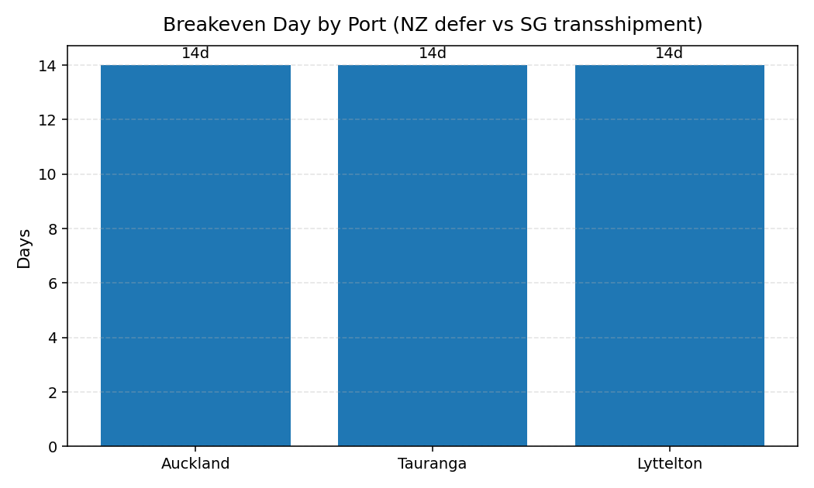

Updated: 2025-11-02 10:59
This analysis compares container movements from New Zealand to Singapore, integrating PortConnect departures, Singapore port data, and modeled local logistics costs. It evaluates transshipment dwell times and domestic deferred storage trade-offs across major NZ ports. The average breakeven point is approximately 14 day(s), where total NZ holding costs (yard, trucking, and wharf) equal Singapore transshipment expenses. On average, NZ deferred storage yields estimated savings of NZD 38967 per batch before breakeven. These insights help optimize export flows, vessel scheduling, and congestion management using real-time cost intelligence.
Updated: 2025-11-02 10:59
Last updated: 2025-11-02
| origin | destination | eta_days | Date | Port | Avg_Transit_Days | Containers | Transshipment_Cost_NZD | Total_Transshipment_Cost_NZD |
|---|---|---|---|---|---|---|---|---|
| Auckland | Singapore | 12.3 | 2025-11-02 | Auckland | 12.3 | 70 | 590 | 41300 |
| Tauranga | Singapore | 11.8 | 2025-11-02 | Tauranga | 11.8 | 70 | 590 | 41300 |
| Lyttelton | Singapore | 13.5 | 2025-11-02 | Lyttelton | 13.5 | 60 | 590 | 35400 |
| Delay_Days | Reduced_SG_Days | Current_SG_Cost | Deferred_Total_Cost | Savings_Per_TEU_NZD | Fleet_Savings_NZD |
|---|---|---|---|---|---|
| 0 | 7.0 | 590 | 590.0 | 0.0 | 0.0 |
| 1 | 6.2 | 590 | 581.0 | 9.0 | 1800.0 |
| 2 | 5.4 | 590 | 572.0 | 18.0 | 3600.0 |
| 3 | 4.6 | 590 | 563.0 | 27.0 | 5400.0 |
| 4 | 3.8 | 590 | 554.0 | 36.0 | 7200.0 |
| 5 | 3.0 | 590 | 545.0 | 45.0 | 9000.0 |
| 6 | 2.2 | 590 | 536.0 | 54.0 | 10800.0 |
| 7 | 1.4 | 590 | 527.0 | 63.0 | 12600.0 |
Total Containers: 200
Baseline Avg Cost per TEU: NZD 590.00
Optimal NZ Delay: 7 days
Per-TEU Saving: NZD 63.00
Total Fleet Saving: NZD 12,600
*Assumes: SG handling+THC+admin = 380 NZD, SG storage = 30 NZD/day.
NZ yard = 10窶・5 NZD/day tested. Each 1 day NZ delay 竕・0.8 day less dwell in Singapore.*
Last updated: 2025-11-02
| origin | destination | eta_days | Date | Port | Avg_Transit_Days | Containers | Transshipment_Cost_NZD | Total_Transshipment_Cost_NZD |
|---|---|---|---|---|---|---|---|---|
| Auckland | Singapore | 12.3 | 2025-11-02 | Auckland | 12.3 | 70 | 590 | 41300 |
| Tauranga | Singapore | 11.8 | 2025-11-02 | Tauranga | 11.8 | 70 | 590 | 41300 |
| Lyttelton | Singapore | 13.5 | 2025-11-02 | Lyttelton | 13.5 | 60 | 590 | 35400 |
| Delay_Days | Reduced_SG_Days | Current_SG_Cost | Deferred_Total_Cost | Savings_Per_TEU_NZD | Fleet_Savings_NZD |
|---|---|---|---|---|---|
| 0 | 7.0 | 590 | 590.0 | 0.0 | 0.0 |
| 1 | 6.2 | 590 | 581.0 | 9.0 | 1800.0 |
| 2 | 5.4 | 590 | 572.0 | 18.0 | 3600.0 |
| 3 | 4.6 | 590 | 563.0 | 27.0 | 5400.0 |
| 4 | 3.8 | 590 | 554.0 | 36.0 | 7200.0 |
| 5 | 3.0 | 590 | 545.0 | 45.0 | 9000.0 |
| 6 | 2.2 | 590 | 536.0 | 54.0 | 10800.0 |
| 7 | 1.4 | 590 | 527.0 | 63.0 | 12600.0 |
Total Containers: 200
Baseline Avg Cost per TEU: NZD 590.00
Optimal NZ Delay: 7 days
Per-TEU Saving: NZD 63.00
Total Fleet Saving: NZD 12,600
*Assumes: SG handling+THC+admin = 380 NZD, SG storage = 30 NZD/day.
NZ yard = 10窶・5 NZD/day tested. Each 1 day NZ delay 竕・0.8 day less dwell in Singapore.*
Updated 2025-11-02
| Port | Containers | Breakeven_Day | NZ_Cost_at_BE | SG_Transshipment_Total |
|---|---|---|---|---|
| Auckland | 60 | 14 | 67800 | 108000 |
| Tauranga | 70 | 14 | 79100 | 115500 |
| Lyttelton | 65 | 14 | 73450 | 113750 |
Assumptions: NZ yard 45 NZD/day/TEU, Truck 320 NZD/ctn, Wharf 180 NZD/ctn.
SG transshipment totals from prior analysis are used as constant comparison lines.
Updated 2025-11-02
| Port | Breakeven Day (days) |
|---|---|
| Auckland | 14 |
| Tauranga | 14 |
| Lyttelton | 14 |